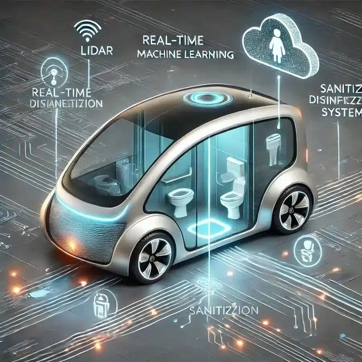
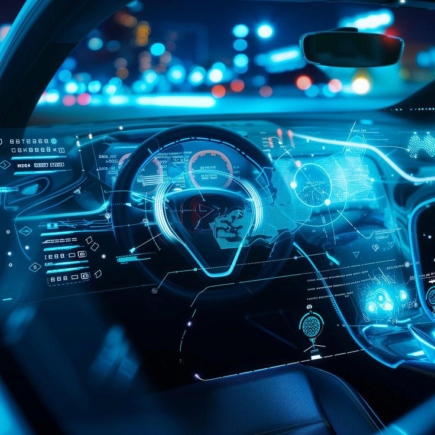
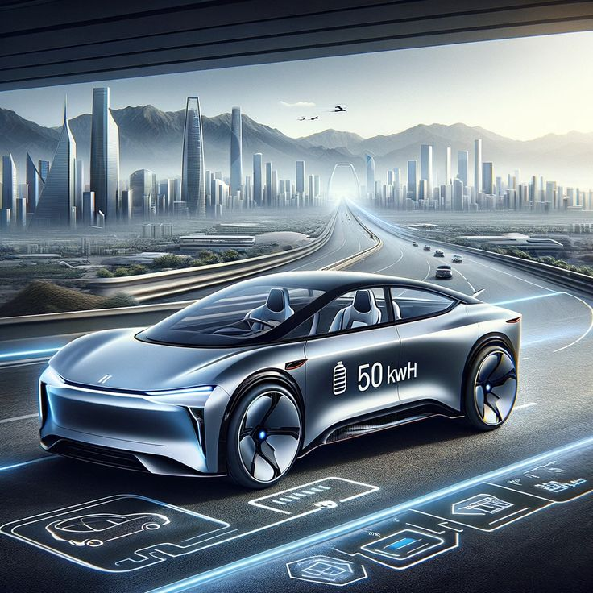

¿QUÉ SON LOS VEHÍCULOS AUTÓNOMOS?
Los vehículos autónomos son sistemas de transporte capaces de operar sin intervención humana directa.
Utilizan sensores, cámaras, radares, GPS y algoritmos de inteligencia artificial para percibir su entorno, tomar decisiones y desplazarse de forma segura.
Su objetivo es transformar la movilidad, reduciendo accidentes, optimizando rutas y mejorando la eficiencia energética.
Los vehículos autónomos son automóviles o camiones que pueden detectar su entorno y navegar sin intervención humana, gracias a una combinación de sensores, cámaras, GPS e inteligencia artificial. Estos vehículos se clasifican en seis niveles de autonomía, desde los sistemas de asistencia al conductor (Nivel 1)
hasta los que son completamente autónomos en cualquier condición
🔍 Componentes clave:
- Sensores LIDAR y cámaras para visión 360°.
- GPS y mapas digitales para navegación precisa.
- Algoritmos de IA para toma de decisiones en tiempo real.
- Sistemas de control para acelerar, frenar y girar automáticamente.
🚗 Clasificación por niveles de autonomía (SAE):
- Nivel 0: Sin automatización.
- Nivel 1–2: Asistencia parcial (frenado automático, control de velocidad).
- Nivel 3: Conducción autónoma limitada bajo ciertas condiciones.
- Nivel 4: Autonomía completa en entornos controlados.
- Nivel 5: Autonomía total en cualquier entorno sin volante ni pedales.

AVANCES RECIENTES EN VEHÍCULOS AUTÓNOMOS
El desarrollo de vehículos autónomos ha avanzado rápidamente gracias a
la integración de inteligencia artificial, conectividad 5G y aprendizaje profundo.
Empresas como Tesla, Waymo, Cruise y Baidu lideran la innovación, probando flotas en ciudades inteligentes
y autopistas.
Los avances recientes en vehículos autónomos incluyen la fusión de sensores (combinación de datos de LiDAR, radar y cámaras) para una visión de 360 grados, la IA y el aprendizaje automático para la toma de decisiones en tiempo real, y la mejora de sistemas de conducción asistida como los que permiten el manejo sin manos en ciertas autopistas. Además, se están haciendo progresos en el sector logístico con camiones y furgonetas
autónomas para entregas más eficientes y continuas.
🧠 Innovaciones destacadas:
- Reconocimiento de peatones, señales y obstáculos en tiempo real.
- Simulación de millones de escenarios para entrenamiento virtual.
- Comunicación entre vehículos (V2V) y con infraestructura (V2X).
- Reducción de errores humanos y mejora en la seguridad vial.
🌍 Aplicaciones actuales:
- Taxis autónomos en San Francisco, Shanghái y Phoenix.
- Camiones de carga sin conductor en rutas logísticas.
- Buses inteligentes en campus universitarios y parques tecnológicos.
- Vehículos de reparto autónomo para última milla.

FUTURO DE LOS VEHÍCULOS AUTÓNOMOS
Se espera que para 2035 los vehículos autónomos representen más del 25% del parque automotor global.
Su impacto será profundo en la economía, el urbanismo y la sostenibilidad.
El futuro de los vehículos autónomos incluye un mercado en rápido crecimiento, una mayor seguridad vial, beneficios de movilidad para personas con limitaciones y una mayor eficiencia en el transporte. Sin embargo, desafíos como la infraestructura, la regulación legal, la ciberseguridad y la adaptación de la fuerza laboral deben superarse para una adopción masiva.
🚀 Proyecciones clave:
- Reducción de accidentes viales hasta en un 90%.
- Menor congestión gracias a rutas optimizadas por IA.
- Ciudades con menos estacionamientos y más espacio público.
- Inclusión de personas con discapacidad en la movilidad autónoma.
⚖ Desafíos éticos y legales:
- ¿Quién es responsable en caso de accidente?
- Privacidad de datos recogidos por sensores.
- Regulación internacional para pruebas y circulación.
- Equidad en el acceso a la tecnología.
🌐 Visión a largo plazo:
- Ecosistemas de movilidad compartida sin conductores.
- Integración con energías limpias y redes inteligentes.
- Vehículos que aprenden de cada viaje y se actualizan automáticamente.